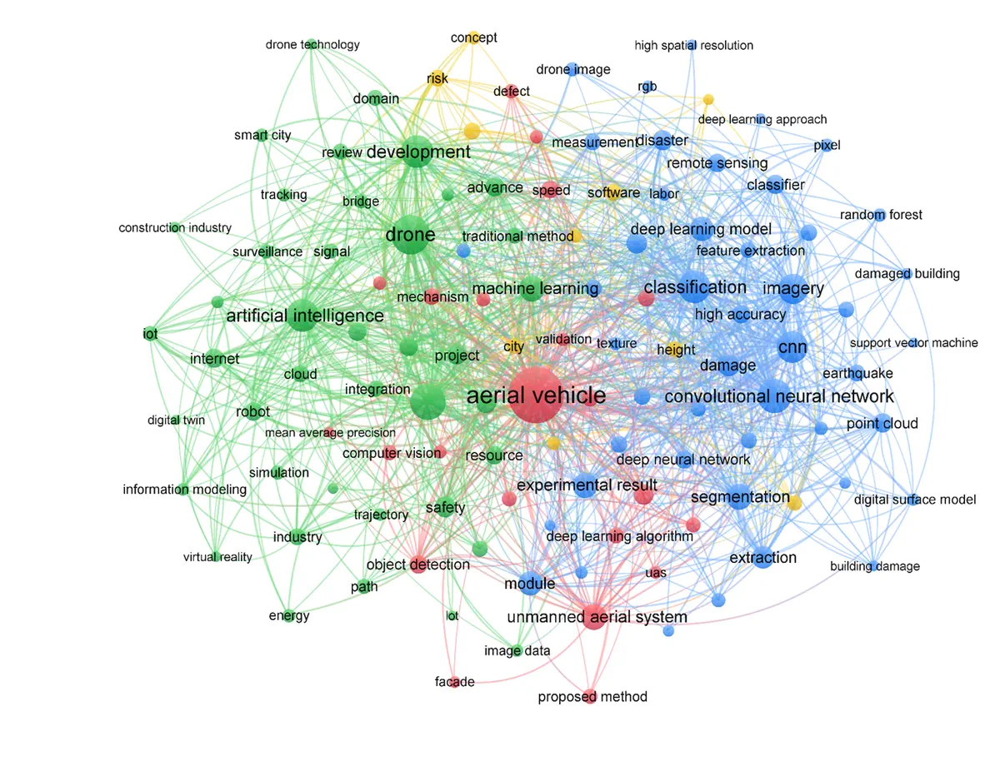
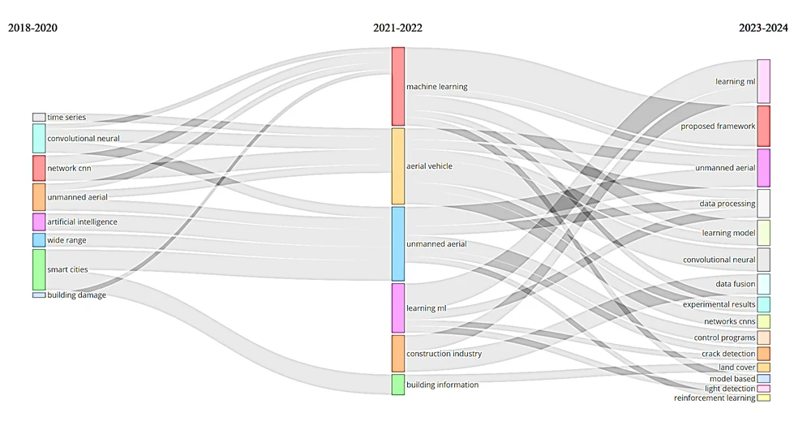
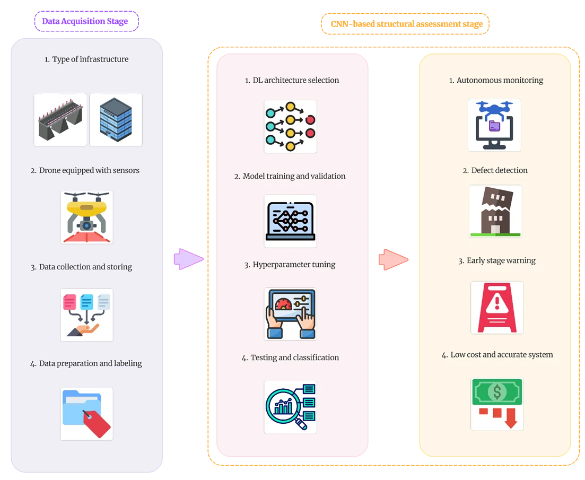

A Systematic Review of Deep Learning-Based Drone Applications in the Construction Industry
Irfan Gazi · Supervisor: Md. Habibur Rahman Sobuz
Systematic review · In preparation
Abstract
Drones are now a routine sight on construction sites, and deep learning is what turns their footage into information a project team can act on. Research on this pairing has grown quickly and unevenly. This PRISMA-guided systematic review maps how deep learning is applied to drone data across the construction industry. Convolutional neural networks and the YOLO family dominate the literature, with object detection, site monitoring and structural assessment as the main applications. A keyword co-occurrence analysis and a thematic analysis across 2018–2024 show how the research focus has shifted. The review traces where each approach is credibly accurate across the phases of a project, from data acquisition and labelling to trained models used for monitoring, defect detection and early warning.
Research Landscape
Keywords such as aerial vehicle, CNN, classification, artificial intelligence and object detection cluster together. Research themes shift across 2018–2020, 2021–2022 and 2023–2024.


Deep Learning Pipeline
Most studies follow two stages: data acquisition with a sensor-equipped drone, then a CNN that is selected, trained and tuned for structural assessment, monitoring and early warning.
